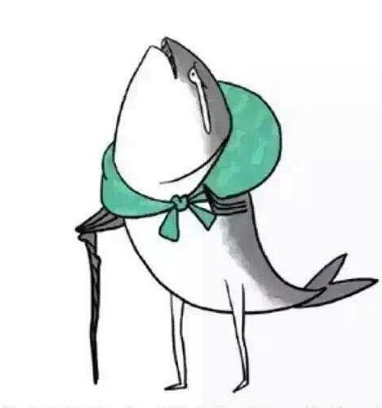

咸鱼
任务目标
掌握HTML/CSS布局的概念
掌握盒模型的概念
掌握position与float的概念以及在布局时的用法
任务描述
使用 HTML 与 CSS 按照 示例图（点击查看） 实现三栏式布局。
左右两栏宽度固定，中间一栏根据父元素宽度填充满，最外面的框应理解为浏览器。背景色为 #eee 区域的高度取决于三个子元素中最高的高度。
任务注意事项
尝试 position 和 float 的效果，思考它们的异同和应用场景。
注意测试不同情况，尤其是极端情况下的效果。
图片和文字内容请自行替换，尽可能体现团队的特色。
调节浏览器宽度，固定宽度和自适应宽度的效果始终符合预期。
改变中间一栏的内容长度，以确保在中间一栏较高和右边一栏较高时，父元素的高度始终为子元素中最高的高度。其他效果图中给出的标识均被正确地实现。